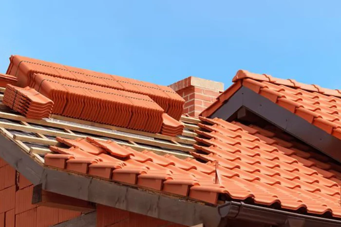

1
Inscription gratuite
Remplissez notre formulaire pour soumettre votre demande d'inscription au réseau Lead Toiture. Cette étape est simple, rapide et 100 % gratuite.
Lead Toiture vous met en relation avec des particuliers ayant un projet concret de toiture dans vos communes d'intervention. Vous concentrez sur vos chantiers, nous nous occupons de la prospection.

Un processus simple, pensé pour faire gagner du temps aux artisans couvreurs et sécuriser les particuliers dans leur recherche de professionnel.
Remplissez notre formulaire pour soumettre votre demande d'inscription au réseau Lead Toiture. Cette étape est simple, rapide et 100 % gratuite.
Après votre inscription, notre équipe vous contacte pour vérifier vos informations et confirmer votre zone d'intervention.
Une fois votre profil validé, vous recevez des demandes de devis provenant de particuliers situés dans votre secteur, correspondant à vos prestations.
Un flux régulier d'opportunités de chantiers, sans démarchage agressif et sans concurrence directe sur chaque demande de devis.
Lorsqu'une demande de devis vous est transmise, vous êtes le seul artisan couvreur à recevoir ce projet. Vous échangez directement avec le client, sans mise en concurrence avec plusieurs entreprises.
Les demandes de devis que vous recevez correspondent aux zones d'intervention que vous avez initialement sélectionnées. Vous ne recevez que des projets situés dans vos communes et départements couverts.
Dès qu'une demande vous est attribuée, vous accédez immédiatement aux coordonnées complètes du particulier. Vous pouvez l'appeler, organiser une visite et proposer votre devis sans intermédiaire.
Plus de 800 artisans couvreurs font déjà confiance à Lead Toiture pour recevoir régulièrement de nouvelles opportunités de chantiers dans leur secteur d'intervention.
Lead Toiture couvre l'ensemble des besoins liés à la toiture, de la rénovation complète aux interventions ponctuelles.
Projets complets de rénovation de toiture, remise en état après sinistre, reprise de charpente ou amélioration de l'isolation de la couverture.

Pose, remplacement ou réparation de gouttières et descentes d'eau pour une évacuation optimale des eaux pluviales et la protection de votre toiture et façades.

Demandes de devis pour l'isolation de toiture par l'intérieur ou par l'extérieur (ITE), amélioration des performances énergétiques et confort thermique.

Entretien courant de la toiture, nettoyage, démoussage, traitement hydrofuge et vérification de l'état général de la couverture.

Pose, réparation ou remplacement de gouttières, chéneaux, abergements, noues et autres éléments de zinguerie.

Interventions spécifiques selon vos spécialités : toitures terrasses, fenêtres de toit, bardage, solutions techniques particulières, etc.
Grâce à Lead Toiture, je reçois des demandes de devis sérieuses dans ma zone. Plus besoin de prospecter des heures : les clients ont déjà un projet concret. Un vrai gain de temps pour mon entreprise.

Ce qui me plaît, c'est qu'on est seul sur chaque lead. Pas de mise en concurrence avec d'autres artisans. Je peux échanger directement avec le client et proposer mon devis en toute sérénité. Très satisfait.
Inscrit depuis deux ans, je reçois régulièrement des chantiers de rénovation et de zinguerie dans mes communes. L'équipe est réactive et les demandes correspondent vraiment à mon activité.
En tant qu'indépendant, trouver des chantiers près de chez soi n'est pas évident. Lead Toiture m'envoie des projets ciblés sur mon secteur. J'ai décroché plusieurs belles rénovations grâce à eux.
Une plateforme simple et efficace. Les demandes arrivent avec les coordonnées du client, je peux les contacter tout de suite. Le réseau est bien organisé et ça se voit dans la qualité des leads.
Après des années à chercher des chantiers via le bouche-à-oreille, Lead Toiture m'a ouvert un flux de demandes qualifiées. Les particuliers sont renseignés, les échanges fluides. Les chantiers s'enchaînent bien.
Je recommande Lead Toiture aux artisans qui veulent remplir leur planning sans perdre du temps en prospection. Les leads sont géolocalisés, les projets clairs. La mise en relation est rapide. Très satisfait.